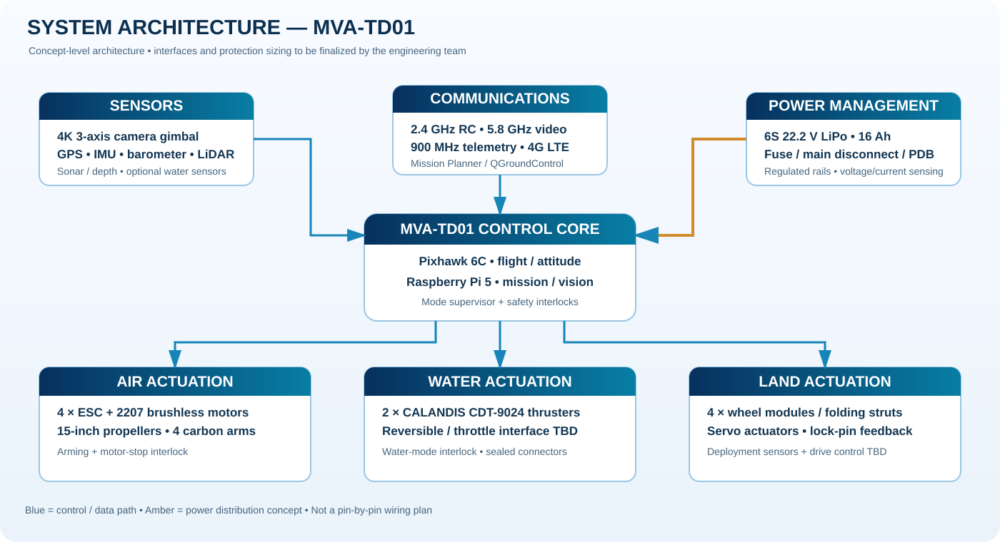

PART 01Hydrodynamic hull
V-bow concept; split shell; gasket groove; arm, thruster and wheel hardpoints. Proposed carbon-fiber shell with 6061-T6 brackets.
Envelope target: 1200 × 800 × 250 mm · shell 2 mm proposal · hull mass target 1.2 kg (verify)
PART 02Aerial system ×4
350 × 25 mm carbon tube arms, clamp mounts, wire channels, motor mounts and 15-inch three-blade props.
2207 / 1500KV motor concept · ESC rating to be calculated
PART 03Water propulsion ×2
CALANDIS CDT-9024 green ducted thruster reference. Rear-side mounts, sealed cable entries and guarded impeller geometry.
User-specified: 12–24 V · 3.5 kgf each · OD 90 × 120 mm · verify vendor data
PART 04Retractable wheels ×4
80 mm NBR wheels, folding struts, pivot hardware and a positive mechanical lock with position feedback.
120 mm strut proposal · 20 kg-cm servo concept · load / torque testing required
PART 05Battery & electronics bay
Central low-mounted battery to aid balance, with EPDM gasket, sealed connector, strain relief and serviceable upper cover.
6S 16 Ah / 22.2 V nominal · box 200 × 150 × 80 mm · verify XT60 current rating
PART 06Camera & sensing pod
Under-nose 3-axis gimbal with isolated mount. GPS, IMU, barometer, LiDAR and sonar provide navigation and environment inputs.
4K target · yaw 360° concept · gimbal weather protection must be verified
System architecture overviewCONTROL · POWER · SENSING · ACTUATION

Blue paths represent proposed data/control links; amber paths represent conceptual power distribution. Connector and protocol selections remain subject to component datasheets.